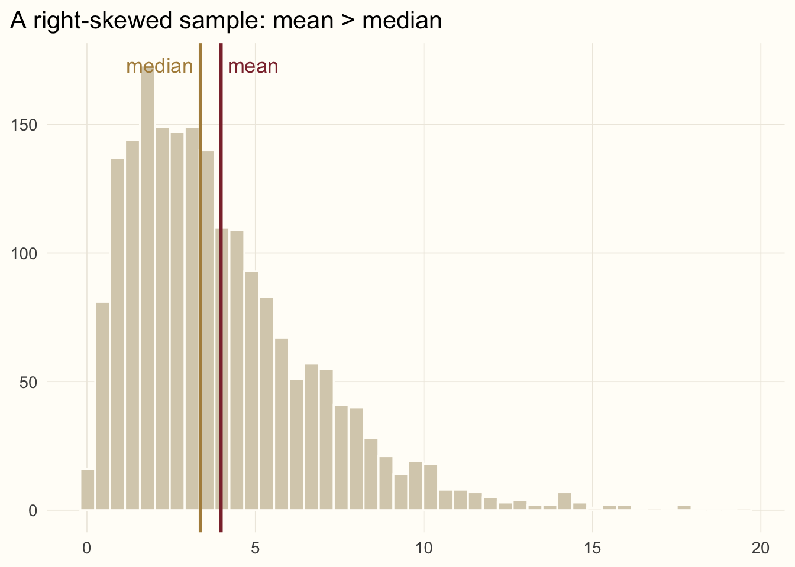
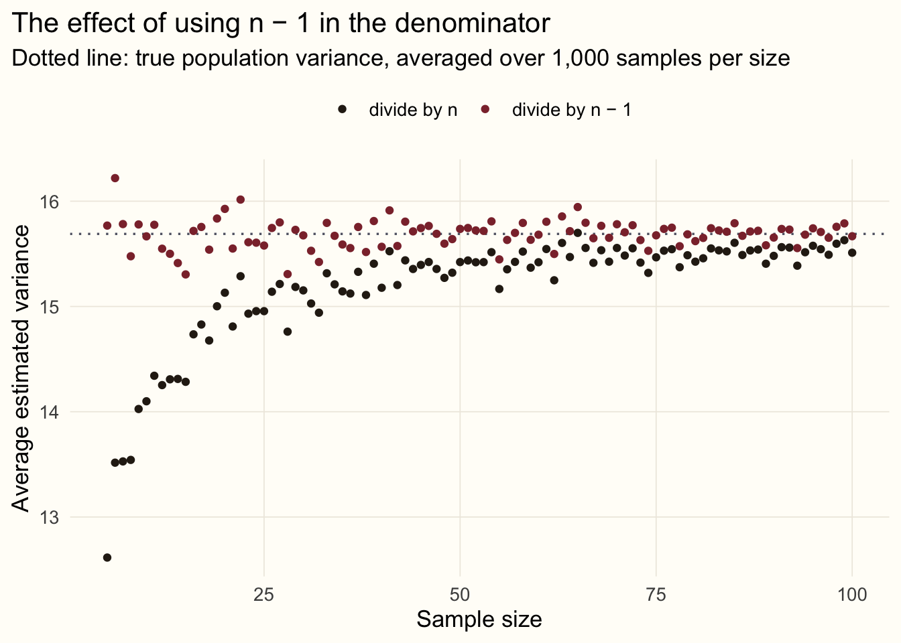

library(ggplot2)
# A shared look for the figures in this series
accent <- "#8c2f39"; gold <- "#b08d4a"; ink <- "#5d6070"
theme_set(
theme_minimal(base_size = 13) +
theme(plot.background = element_rect(fill = "#FFFDF8", colour = NA),
panel.grid.minor = element_blank(),
panel.grid.major = element_line(colour = "#EEEAE0", linewidth = 0.3),
plot.title.position = "plot")
)Statistics from the beginning: location and spread
statistics
R
teaching
series
First in a series on statistical tests: what the mean, median, variance and standard deviation really measure, and why we divide by n − 1.
Series · Statistics from the beginning · Part 1
NoteAbout this series
This series is adapted from lecture notes I wrote in 2017, Introduction to Statistical Tests (original PDF). I am turning them into short posts with fresh code and figures, starting from the very beginning. This first part covers location and spread. Later parts cover covariance and correlation, and then the tests themselves.
Statistics, and a statistic
Statistics is a branch of mathematics concerned with the collection, analysis, interpretation and presentation of data. A very similar word, a statistic, means something narrower: a single number that summarises some feature of a data sample, produced by a statistical procedure. The sample mean and the sample standard deviation are statistics.
One distinction runs through everything that follows:
- distributions (populations) are described by parameters,
- samples are described by statistics.
We almost never see the whole population, so we use statistics computed from a sample to estimate the parameters of the distribution it came from. Every distribution can be described by two kinds of parameters: location parameters (where are the data?) and spread (dispersion) parameters (how widely is it scattered?).
Location: where are the data?
Mean
The mean measures the central tendency of the data: the sum of all values divided by the number of observations,
\[ \mu = \frac{\sum x}{N}. \]
The population mean is written \(\mu\) and the sample mean \(\bar{x}\); \(N\) is the number of observations.
The mean has a weakness: it uses every value, so it is pulled around by outliers and by skewed distributions. Five sheep weighing between 52 and 57 kg have a mean of 54.8 kg. Add one animal recorded as 120 kg (perhaps a typo) and see what happens:
sheep <- c(52, 54, 55, 56, 57)
c(mean = mean(sheep), median = median(sheep)) mean median
54.8 55.0 sheep_typo <- c(sheep, 120)
c(mean = mean(sheep_typo), median = median(sheep_typo)) mean median
65.66667 55.50000 The mean jumps by more than ten kilos; the median barely moves. People handle this problem with variants of the mean, such as the weighted mean or the Winsorised mean, which tames extreme observations, but we will not go into those here.
Median
The median is another location parameter. Unlike the mean it does not use all the observations: it is simply the middle value of the ordered data. With an odd number of data points it is easy to find. With an even number, it is the mean of the two middle values.
Comparing the mean with the median tells us something about skewness:
- for a perfectly symmetric distribution, mean and median are equal,
- for a right-skewed distribution (a long tail to the right), the mean is greater than the median, because the tail drags the mean along,
- for a left-skewed distribution (a long tail to the left), the mean is less than the median.
set.seed(42)
x <- data.frame(value = rgamma(2000, shape = 2, rate = 0.5))
ggplot(x, aes(value)) +
geom_histogram(bins = 45, fill = "#d8cfba", colour = "#FFFDF8") +
geom_vline(xintercept = median(x$value), colour = gold, linewidth = 1) +
geom_vline(xintercept = mean(x$value), colour = accent, linewidth = 1) +
annotate("text", x = median(x$value) - 0.2, y = Inf, vjust = 2, hjust = 1,
label = "median", colour = gold) +
annotate("text", x = mean(x$value) + 0.2, y = Inf, vjust = 2, hjust = 0,
label = "mean", colour = accent) +
labs(x = NULL, y = NULL, title = "A right-skewed sample: mean > median")
Spread: how scattered are the data?
Variance
Variance measures dispersion around the mean: the more spread out the observations, the larger the variance. The population variance is \(\sigma^2\) and the sample variance is \(s^2\):
\[ \sigma^2 = \frac{\sum (x - \mu)^2}{N} \qquad\qquad s^2 = \frac{\sum (x - \bar{x})^2}{n - 1}. \]
Why divide by \(n - 1\) rather than \(n\)? We want \(s^2\) to be as good an estimate of \(\sigma^2\) as possible. Think of estimating the variance of weights in a herd of 2,000 sheep from a sample of 200. It is quite likely that our sample misses the few very light and very heavy animals, which would otherwise have contributed large \((x - \bar{x})^2\) terms. There is a second, more precise way to see it: we measure the deviations from \(\bar{x}\), a number computed from the same sample, and the sample is always closer to its own mean than to the true mean \(\mu\). Dividing by \(n\) would therefore underestimate the variance systematically; dividing by \(n - 1\) corrects it exactly.
Let’s check this with a simulation. We create a herd of 2,000 sheep, draw many samples of each size, and compare the two estimators with the true population variance.
set.seed(2017)
herd <- rnorm(2000, mean = 55, sd = 4)
# population variance: divide by N
pop_var <- function(x) sum((x - mean(x))^2) / length(x)
true_var <- pop_var(herd)
compare_var <- function(pop, n_draws, sample_size) {
draws <- replicate(n_draws, sample(pop, sample_size)) # one sample per column
c(corrected = mean(apply(draws, 2, var)), # divides by n - 1
uncorrected = mean(apply(draws, 2, pop_var))) # divides by n
}
sizes <- 5:100
sim <- t(sapply(sizes, function(n) compare_var(herd, 1000, n)))
sim <- data.frame(n = rep(sizes, 2),
estimate = c(sim[, "uncorrected"], sim[, "corrected"]),
version = rep(c("divide by n", "divide by n − 1"), each = length(sizes)))ggplot(sim, aes(n, estimate, colour = version)) +
geom_hline(yintercept = true_var, colour = ink, linetype = "dotted") +
geom_point(size = 1.4) +
scale_colour_manual(values = c("divide by n" = "#2b2117", "divide by n − 1" = accent)) +
labs(x = "Sample size", y = "Average estimated variance", colour = NULL,
title = "The effect of using n − 1 in the denominator",
subtitle = "Dotted line: true population variance, averaged over 1,000 samples per size") +
theme(legend.position = "top")
For small samples, dividing by \(n\) clearly underestimates the variance; for large samples the choice hardly matters, because \(n\) and \(n - 1\) are nearly the same number.
Variance can never be negative, since we square the deviations. A side effect of that squaring is that variance is expressed in squared units (kilograms squared for weights). That is why we usually report its square root instead.
Standard deviation
The standard deviation (sd, SD, std. dev.) is the square root of the variance, written \(\sigma\) for a population and \(s\) for a sample. It is in the same units as the data, which makes it far easier to interpret: for our sheep, an sd of about 4 means that a typical animal is within a few kilograms of the herd’s mean weight.
Putting different scales on the same footing
If two traits are measured on different scales (say, body weight in kilograms and fleece length in centimetres), their variances cannot be compared directly: the numbers depend on the units. The usual remedy is standardisation: we transform each variable so that it has mean 0 and standard deviation 1, i.e. it follows the standard normal scale \(\mathcal{N}(0, 1)\). The standardised values are called z-scores; each one tells us how many standard deviations an observation lies from the mean:
\[ z = \frac{x - \bar{x}}{s}. \]
set.seed(7)
herd2 <- data.frame(weight_kg = rnorm(200, 55, 4),
fleece_cm = rnorm(200, 11, 1.5))
ewe <- c(weight_kg = 58, fleece_cm = 13.4)
z <- (ewe - colMeans(herd2)) / sapply(herd2, sd)
round(z, 2)weight_kg fleece_cm
0.65 1.56 On the raw scale, 58 kg and 13.4 cm cannot be compared. As z-scores they can: this hypothetical ewe is about two-thirds of a standard deviation heavier than average, but more than one and a half standard deviations above average in fleece length. Relative to the rest of the herd, her fleece is the more unusual feature.
What’s next
We now have the vocabulary to describe a single variable: where it sits and how much it varies. In the next part we look at two variables at once, with covariance and correlation. Spoiler: correlation is simply covariance after standardisation.
Next in the series: covariance and correlation.